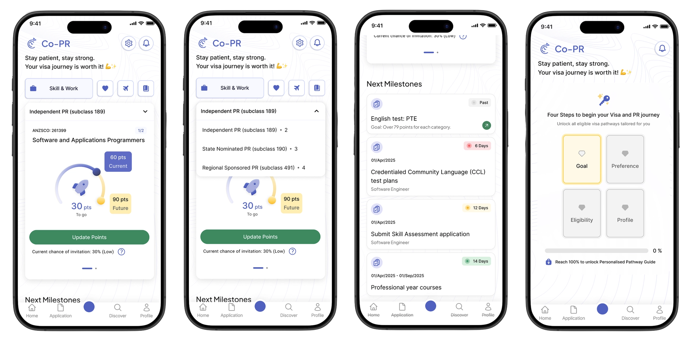
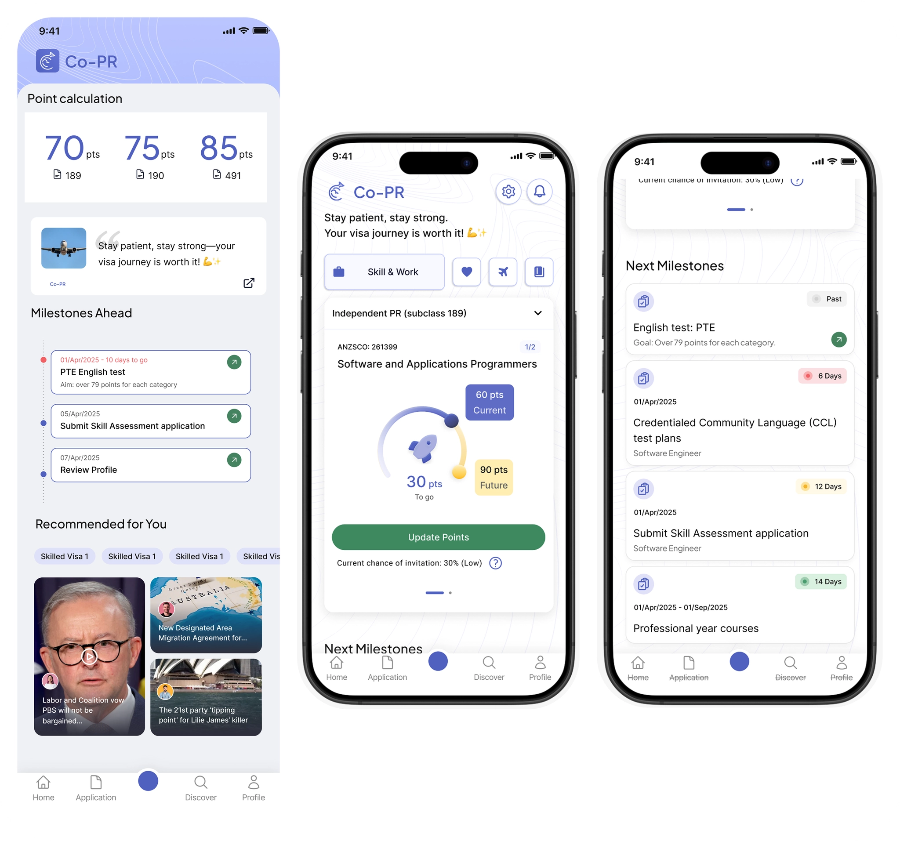

Co-PR
A home screen redesign that turned a data-heavy PR tracker into a personal roadmap.

Users didn't need more information — they needed a clearer place to start.
The existing home surfaced everything at once: multiple PR pathways, points data, and a news feed. Users froze — not from lack of understanding, but from having no obvious starting point.
A home screen that knows where you are in the journey.

Pathway Dashboard
Pathway selector + score arc + contextual CTAs. See your gap, know your next step.
Guided Onboarding
4-step setup for first-time users that progressively unlocks a personalised pathway guide.
From everything at once, to only what matters now.

Audit, redesign, validate — in 1 week.
Audit → Reframe
The old home tried to be everything. We mapped what users needed on day 1 vs. day 30 and designed for both separately.
Redesign → Remove
Built the home around a pathway selector and score arc. Cut the news feed entirely — moved it to the Discover tab.
Onboard → Guide
First-time users get a 4-step guided setup. Returning users see only their most urgent next milestone.
Users said it finally felt usable.
Validated through user testing after a 1-week design sprint.
Easier to navigate — users had a clear starting point and knew what to do next.
Easier to find what they need — key info surfaced instead of buried under data.
Less intimidating — the lighter UI made the PR process feel approachable, not overwhelming.